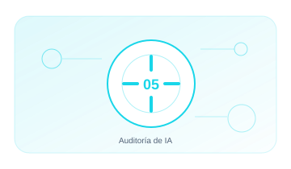

05 · PILAR
Auditoría de IA
Evaluar gobierno, controles técnicos y evidencias de forma reproducible.
EnfoqueTécnico, práctico y entendible
Contenido4 guías extensas y aplicables
Aplicable aOrganizaciones y sistemas reales

05.01 · GUÍA
Auditoría ISO/IEC 42001
Prepara y ejecuta auditorías internas del SGIA orientadas a evidencias.
17–23 min+1.658 palabrasAbrir guía →
05.02 · GUÍA
Auditoría técnica de IA
Examina arquitectura. configuración. flujos. permisos. registros y comportamiento.
27–33 min+2.543 palabrasAbrir guía →
05.03 · GUÍA
Recogida de evidencias
Obtén evidencias suficientes. íntegras. trazables y repetibles.
15–21 min+1.534 palabrasAbrir guía →
05.04 · GUÍA
Informes de auditoría
Comunica el riesgo con claridad y permite verificar la remediación.
15–21 min+1.560 palabrasAbrir guía →
01
PlanificarControl y evidencia aplicable
02
MuestrearControl y evidencia aplicable
03
ProbarControl y evidencia aplicable
04
ConcluirControl y evidencia aplicable
05
SeguirControl y evidencia aplicable
Cada guía incluye explicación, implantación, controles, evidencias, errores habituales, métricas y referencias.